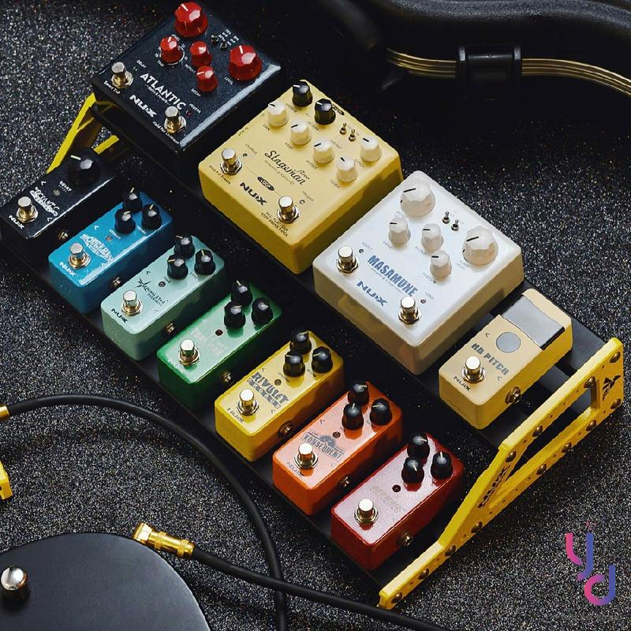

我希望未來能成為一位技巧純熟且富有創造力的電吉他手，能夠在不同的音樂風格中自由演奏。我的目標是能夠創作電吉他樂曲和一些即興演奏，希望可以加入樂團,可以學會更多的歌曲,和更多的即興演奏,然後也可以像Tim Henson以樣。
在這兩,三個月內我希望可以把Playing God練完,還有把一些像點弦或更難的技巧練好,還有加強節奏感,或在練習更多的即興演奏。
最近我對指彈電吉他(Eddie Van Halen)的演奏方式算瘋狂而且他的點弦很快,然後也不會失誤算瘋狂而且他的點弦很快,然後也不會失誤。我正在研究一些知名的指彈吉他手的演奏技巧和曲目，和嘗試模仿和學習他們的風格。同時，我也對吉他效果器的使用產生了濃厚的興趣。
目前我遇到的主要困難是在練習歌曲如果有滑音的時候滑太多次手指就會很痛。此外，在學習新的複雜技巧時，常常會遇到瓶頸，就需要花一些時間去學習。